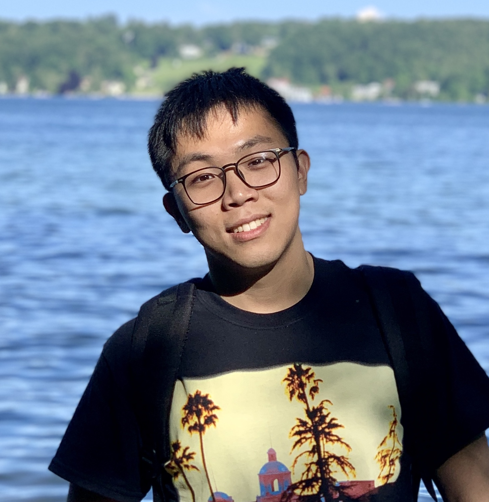
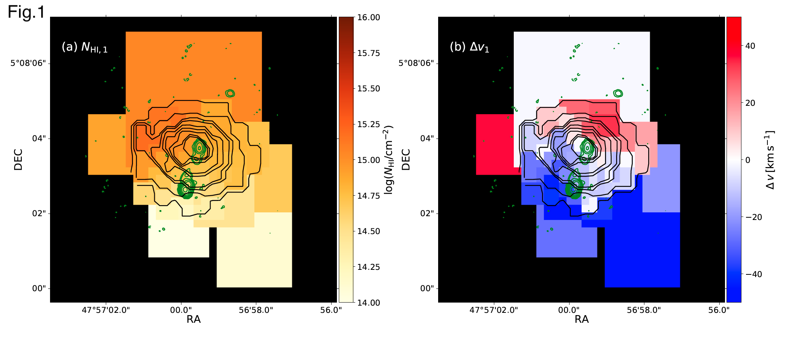
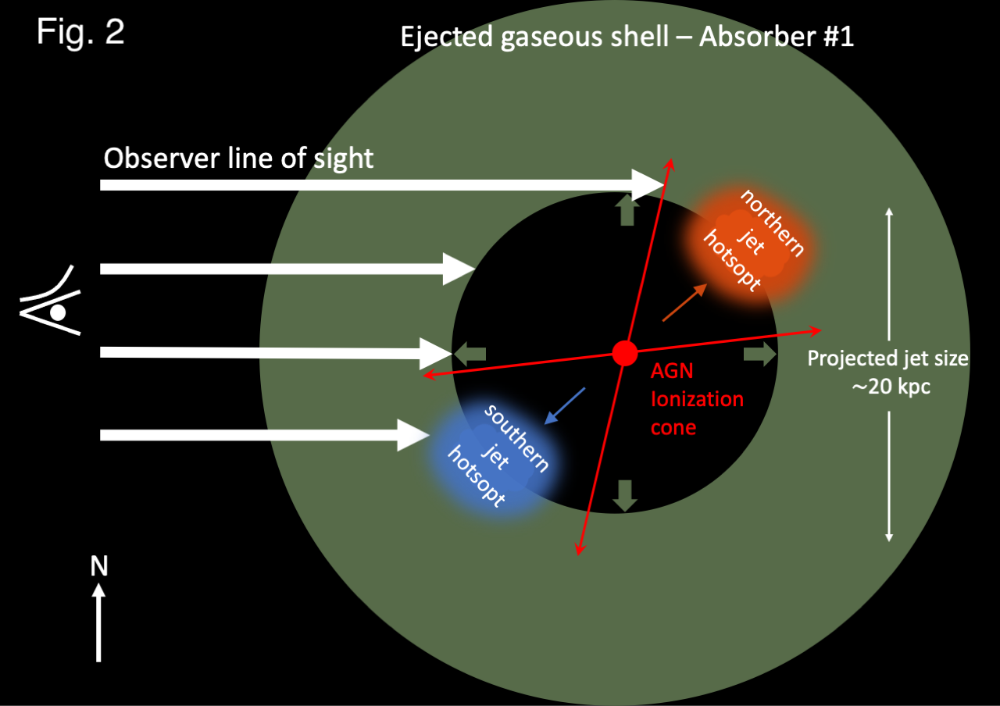

<!DOCTYPE HTML>
<!--
	Hyperspace by HTML5 UP
	html5up.net | @ajlkn
	Free for personal and commercial use under the CCA 3.0 license (html5up.net/license)
-->
<html>
	<head>
		<title>Wuji Wang's Personal Website</title>
		<meta charset="utf-8" />
		<meta name="viewport" content="width=device-width, initial-scale=1, user-scalable=no" />
		<link rel="stylesheet" href="assets/css/main.css" />
		<noscript><link rel="stylesheet" href="assets/css/noscript.css" /></noscript>
	</head>
	<body class="is-preload">

		<!-- Sidebar -->
			<section id="sidebar">
				<div class="inner">
					<nav>
						<ul>
							<li><a href="#intro">Home</a></li>
							<li><a href="#edu">Education</a></li>
							<li><a href="#paper">Publications & Theses</a></li>
							<li><a href="#obs">PI Observations</a></li>
                            <li><a href="#talkmedia">Talks & Media</a></li>
                            <li><a href="#teaching">Teaching</a></li>
						</ul>
					</nav>
				</div>
			</section>

		<!-- Wrapper -->
			<div id="wrapper">

				<!-- Intro -->
					<section id="intro" class="wrapper style1 fullscreen fade-up">
						<div class="inner">
                                <h1>WANG, Wuji 王无忌<a href="#" class="image right"></a></h1>
                                <h2>Hello and welcome!</h2>
                            <p></p>
							<p> I am currently an astrophysics PhD student at  <a href="https://zah.uni-heidelberg.de/welcome">Zentrum für Astronomie der Universität Heidelberg</a> Astronomisches Rechen-Institut. My thesis supervisor is <a href="https://wwwstaff.ari.uni-heidelberg.de/dwylezalek/">Dr. Dominika Wylezalek</a>, and I am a member of the <a href="https://wwwstaff.ari.uni-heidelberg.de/dwylezalek/galena.html">GALENA</a> group. I am also closely working with Dr. Joël Vernet and Dr. Carlos De Breuck at <a href="https://www.eso.org/">ESO</a>.</p>
                            <p> My research interests are galaxy formation and evolution. Specifically, I am interested in the feedback processes of the AGN and how they affect the ISM and CGM of the host galaxies. Currently, my work focuses on studying the feedback processes in a sample of high-redshift radio galaxies (HzRGs, z>2) using the observation of MUSE. Besides, I am PI of <a href="#obs">VLT/UVES, ALMA and most importantly JWST/NIRSpec IFU obsrvations</a> of samples of HzRGs.</p>
                            <h2><i class="gg-browse"></i>Mapping absorbing gaseous halos</h2>
                            <figure>
                                
                            </figure>
                            <p class="paragraph">
                            In <a href="https://ui.adsabs.harvard.edu/abs/2021arXiv210709066W/abstract">Wang et al. 2021</a>, we examed the spatial distribution of the absorbing neutral hydrogen gas (as well as metal enriched gas) around the highest redshift radio galaxies in our MUSE sample, z=4.5077. We obtained the spatial column density distribution and velocity shift maps of the neutral hydrogen absorbers through fitting the absorption features spatially with Ly-alpha emission. In 1 of the 7 absorbers, we identified a colunm density gradient and a velocity gradient (Fig.1). We propose this could show evidence of AGN enriching and redistributing metals at ISM/CGM scale (Fig.2).
                            </p>

                            <ul class="icons">
                                <br/>
                                <li><a href="mailto: wuji.wang@uni-heidelberg.de" class="icon solid fa-envelope"><span class="label">Email</span></a></li>
                                <li><a href="mailto: wuji.wang_astro@outlook.com" class="icon solid fa-envelope-square"><span class="label">Email</span></a></li>
                                <li><a href="https://twitter.com/Regulus_wang" class="icon brands fa-twitter"><span class="label">Twitter</span></a></li>
                            </ul>
							<!--<ul class="actions">
								<li><a href="#one" class="button scrolly">Learn more</a></li>
							</ul>-->
						</div>
					</section>

				<!-- One -->
					<section id="edu" class="wrapper style2 fullscreen fade-up">
                        <!--<section>-->
							<!--<a href="#" class="image"></a>-->
							<!--<div class="content">-->
								<div class="inner">
									<h2>Education</h2>
                                    <table style="width:90%">
                                            <tr>
                                              <td>Heidelberg University</td>
                                              <td>Oct. 2020 - </td>
                                              <td>Germany</td>
                                              <td>PhD</td>
                                            </tr>
                                            <tr>
                                                    <td>European Southern Observatory</td>
                                                    <td>Apr. 2019 - Jun. 2020</td>
                                                    <td>Germany</td>
                                                    <td>Master Thesis Work</td>
                                            </tr>
                                            <tr>
                                              <td>Ludwig Maximilian University of Munich</td>
                                              <td>Apr. 2018 - Jul. 2020</td>
                                              <td>Germany</td>
                                              <td>Master of Astrophysics</td>
                                            </tr>
                                            <tr>
                                              <td>Nanjing University</td>
                                              <td>Sept. 2013 - Jul. 2017</td>
                                              <td>China</td>
                                              <td>Bachelor of Astronomy</td>
                                            </tr>
                                          </table>
								</div>
					</section>

				<!-- Two -->
					<section id="paper" class="wrapper style2-alt fullscreen fade-up">
						<div class="inner">
							<h2>First-author paper(s)</h2>
                            <p> &#9679;<a href="https://ui.adsabs.harvard.edu/abs/2021arXiv210709066W/abstract">
                                Mapping the "invisible" circumgalactic medium around a z ∼ 4.5 radio galaxy with MUSE</a><br/>
                                <font size="-1"><i><b>Wuji Wang</b>, Dominika Wylezalek, Carlos De Breuck, Joël Vernet, Andrew Humphrey, Montserrat Villar Martín, Matthew Lehnert, Sthabile Kolwa</i></font>
                            </p>
                            <h2>Co-author paper(s)</h2>
                            <p> &#9679; <a href="https://ui.adsabs.harvard.edu/abs/2021A%26A...645A.120F/abstract">
                                ALMA and MUSE observations reveal a quiescent multi-phase circumgalactic medium around the z~3.6 radio galaxy 4C 19.71</a><br/>
                            <font size="-1"><i>Theresa Falkendal, Matthew D. Lehnert, Joël Vernet, Carlos De Breuck, <b>Wuji Wang</b></i></font>
                            </p>
                            <p> &#9679; <a href="https://ui.adsabs.harvard.edu/abs/2021arXiv211108719W/abstract">
                                MASCOT -- An ESO-ARO legacy survey of molecular gas in nearby SDSS-MaNGA galaxies: I. first data release, and global and resolved relations between H_2 and stellar content</a><br/>
                            <font size="-1"><i>D.Wylezalek, C. Cicone, F. Belfiore,  C. Bertemes, S. Cazzoli, J. Wagg, <b>Wuji Wang</b>,  M. Aravena, R. Maiolino, S. Martin, M.S. Bothwell, J.R. Brownstein, K. Bundy, C. De Breuck  </i></font>
                            </p>
                            <h2>Theses</h2>
                            <p> &#9679; Master Thesis :
                                <a href="./files/MasterThesis_LMU_physics_Wuji_Wang.pdf">
                                MUSE View of the CGM around a z ~ 4.5 Radio Galaxy</a>
                            </p>
                            <p> &#9679; Bachelor Thesis (Chinese with English abstract):
                                <a href="./files/Bachelor_T_WujiWang.pdf">
                                Investigating the high-redshift tidal disruption event candidate in the CDF-S</a>
                            </p>
                            <h3><a href="https://ui.adsabs.harvard.edu/public-libraries/BRKFteavQGK2qrtljtTo_w">ADS library of my publications</a></h3>
							</div>
                    
					</section>

				<!-- Three -->
					<section id="obs" class="wrapper style3 fullscreen fade-up">
						<div class="inner">
							<h2>PI Observation programs</h2>
							<p>&#9679; JWST NIRSpec/IFU, Cycle1, 24.5h (approved):<br/>
                            <a href="https://www.stsci.edu/jwst/science-execution/program-information.html?id=1970">Zooming into the Monster's Mouth: Tracing Feedback from Their Hosts to Circumgalactic Medium in z=3.5 Radio-loud AGN</a>
                            </p>
                            <p> &#9679; VLT/UVES, P108, 20h (observation completed) -- 108.21WL.001
                            </p>
                            <p> &#9679; ALMA, Cycle8, 19.9h (observation finished, 13.9h executed) -- 2021.1.00576.S
                            </p>
                        </div>
					</section>
                <!-- Four -->
                    <section id="talkmedia" class="wrapper style3-alt fullscreen fade-up">
                        <div class="inner">
                            <h2>Talks & Media</h2>
                            <table style="width:90%">
                                    <tr>
                                      <td>Apr. 20th 2021</td>
                                      <td><a href="https://zah.uni-heidelberg.de/news/detail/zooming-into-the-monsters-mouth">ZAH Press Release</a>   <i class="fa fa-newspaper"></i></td>
                                    </tr>
                                    <tr>
                                        <td>Jun. 17th 2021</td>
                                        <td><a href="https://zah.uni-heidelberg.de/talks-seminars-events/details?tx_zahinfothek_eventslist%5Baction%5D=full&tx_zahinfothek_eventslist%5Bid%5D=5&cHash=2c41d70df79a38d577e6e9b762b2e4b8">ARI Institute Colloquium, talk</a>   <i class="fa fa-comment"></i></td>
                                    </tr>
                                    <tr>
                                      <td>Jun. 28th - Jul. 2nd 2021</td>
                                      <td><a href="https://k-poster.kuoni-congress.info/eas2021/poster/53abc76f-138d-439c-8edc-ee7eac0105b3">EAS 2021, ePoster</a>   <i class="fa fa-file-pdf"></i></td>
                                    </tr>
                                    <tr>
                                        <td>Aug. 2021</td>
                                        <td><a href="https://backend-484.uni-heidelberg.de/de/dokumente/unispiegel2021-2/download">UNI SPIEGEL</a>   <i class="fa fa-newspaper"></i></td>
                                    </tr>
                                    <tr>
                                        <td>Nov. 3rd 2021</td>
                                        <td><a href="https://kiaa.pku.edu.cn/KooGig_junior21/Program.htm">1st KooGiG-Junior, Talk</a>    <i class="fa fa-comment"></i></td>
                                    </tr>
                                    <tr>
                                        <td>Jan. 26th 2022</td>
                                        <td><a href="https://www.astro.udp.cl/Quasars_and_Galaxies_through_Cosmic_Time/abstracts.html#Wuji-Wang">Quasars and Galaxies through Cosmic Time</a> (<a href="https://www.youtube.com/watch?v=vZMt3bEoC3I&list=PL5HgqSUEiSGN5cLYFTPmIg6lU5Lx-pvOQ&index=4">Talk YouTube Recording</a>)    <i class="fa fa-comment"></i></td>
                                    </tr>
                                    <tr>
                                        <td>Sept. 15th 2022</td>
                                        <td><a href="https://sites.google.com/unimib.it/gas2022/dates-programme?authuser=0">What matter(s) around galaxies 2022, Talk</a>     <i class="fa fa-comment"></i></td>
                                    </tr>
                                    <td>Sept. 26th - 30th 2022</td>
                                    <td><a href="http://astro.dur.ac.uk/~xswt42/Growth_of_Black_Holes/index2.php">What drives the growth of black holes, Poster</a>   <i class="fa fa-file-pdf"></i></td>
                                  </tr>
                                  </table>
                        </div>
                    </section>
                    <!-- Five -->
                    <section id="teaching" class="wrapper style3 fullscreen fade-up">
                        <div class="inner">
                            <h2>Teaching</h2>
                            <p>&#9679; March 2021 -- July 2021:
                            <a>Galactic and Extragalactic Astronomy (MVastro3), Heidelberg University, tutor </a>
                            </p>
                            <p> &#9679; March 2021 -- July 2021:
                            <a href="https://wwwstaff.ari.uni-heidelberg.de/dwylezalek/galena.html">BSc Thesis -- Chuanming Mao, Heidelberg University, co-advise</a>
                            </p>
                            <p> &#9679; October 2021 -- June 2022 :
                            <a>CCD photometry in modern astronomy (FP30), Heidelberg University, tutor</a>
                            </p>
                            </p>
                            <p> &#9679; October 2022 -- :
                            <a href="https://wwwstaff.ari.uni-heidelberg.de/dwylezalek/galena.html">BSc Project -- Yu-Ruei Wang, Heidelberg University, co-advise</a>
                            </p>
                        </div>
                    </section>

		<!-- Footer -->
			<footer id="footer" class="wrapper style1-alt">
				<div class="inner">
					<ul class="menu">
						<li>&copy; WujiWang</li><li>Design: <a href="http://html5up.net">HTML5 UP</a></li>
					</ul>
				</div>
			</footer>

		<!-- Scripts -->
			<script src="assets/js/jquery.min.js"></script>
			<script src="assets/js/jquery.scrollex.min.js"></script>
			<script src="assets/js/jquery.scrolly.min.js"></script>
			<script src="assets/js/browser.min.js"></script>
			<script src="assets/js/breakpoints.min.js"></script>
			<script src="assets/js/util.js"></script>
			<script src="assets/js/main.js"></script>

	</body>
</html>
